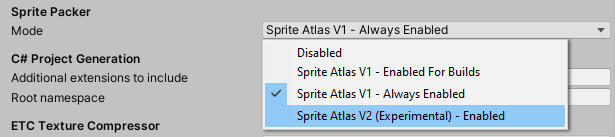
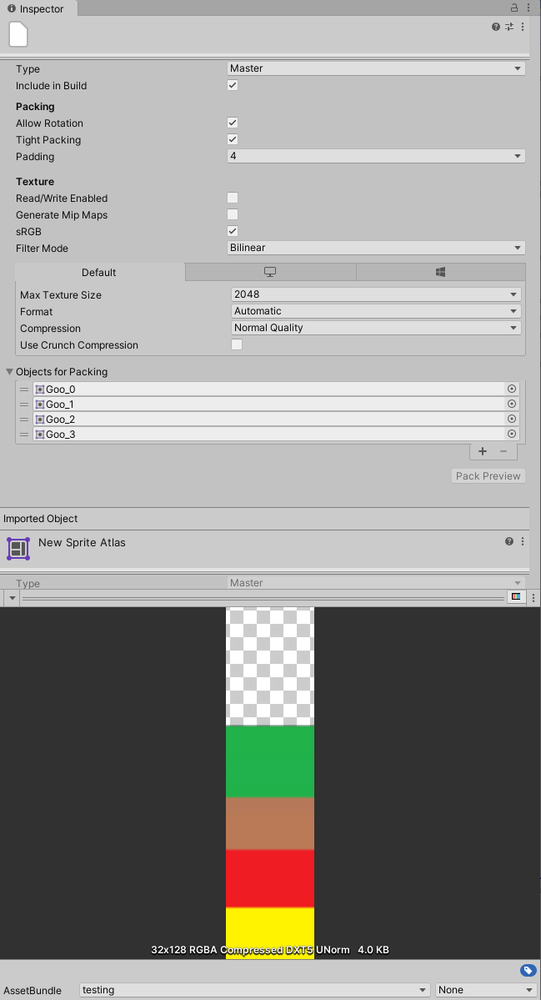

The current Sprite Atlas packs Textures (from Sprites, Sprites within Textures, and Sprites in folders) into an Atlas Texture. It packs these Textures when it enters Play Mode, or when it builds the Player or an AssetBundle.
To configure the packing behavior, go to Edit > Project Settings > Editor > Sprite Packer and select an option from the Mode drop-down menu.

Setting the Sprite Packer Mode to Sprite Atlas V2 Experimental.
AssetDatabase V1 cannot have dependencies, and has no Importer support for named objects, so Unity packs its Sprite Atlases through a custom mechanism and stores the output data of Textures and render data in the Library/AtlasCache folder.
However, Sprite Atlas version 1 does not support the Cache Server. Unity can only cache Artifacts (data generated through the import process) stored in the Library folder. As it does not use an importer, the current system cannot use some of the functionalities exposed by AssetDatabase V2 (ADBV2) such as Cache Server support.
The v2 experimental system is developed with the following criteria in mind:
Use an Importer workflow that supports Cache Server and other ADBV2 features.
No changes to the Sprite Atlas Runtime Object.
Ensure that there is a migration path between current Sprite Atlases to Sprite Atlas V2.
No major changes to the UX workflow.
There are no changes to the Inspector properties and settings from that of Sprite Atlas v1 except for the following :
You cannot drag a folder directly onto Objects for Packing to add the contents for packing in Sprite Atlas v2, however dragging Sprites and Textures directly onto the window is still supported.
The imported Sprite Atlas object is displayed at the bottom of the Inspector.

Updated Inspector properties.
To enable the experimental Sprite Atlas v2 mode, go to Edit > Project Settings > Sprite Packer, open the Mode drop-down menu and select Sprite Atlas V2 (Experimental) - Enabled.
When you enable the experimental Sprite Atlas v2:
It becomes the default Mode when you create a Sprite Atlas through the Assets menu (Assets > Create > Sprite Atlas).
Unity automatically migrates all existing Sprite Atlas v1 Assets to Sprite Atlas v2.
Due to the automatic migration, you should make a backup of your v1 Sprite Atlases before you enable Sprite Atlas v2. Assets converted to v2 are incompatible with v1, and cannot be converted back.
Editing Sprite Atlas v2 via scripting is currently not supported.